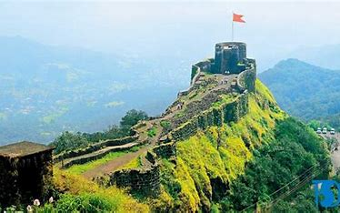

Pratapgad Fort
Pratapgad Fort is a historic hill fort located in the Satara district of Maharashtra, India. It holds great significance in the history of the Maratha Empire. Here are some key details about Pratapgad Fort:
History
- Built By: The fort was built by Shivaji Maharaj in 1656.
- Significance: Pratapgad Fort is famous for the Battle of Pratapgad, fought between Shivaji Maharaj and Afzal Khan in 1659, where Shivaji emerged victorious.
Architecture
- Design: The fort is strategically built on a hilltop and includes several structures such as the Bhavani Temple, Mahadev Temple, and a spacious courtyard.
- Notable Structures: Key attractions within the fort include the Afzal Buruj, a tower built in memory of Afzal Khan.
Location
- Coordinates: 17.9300° N, 73.5889° E
- Elevation: Pratapgad Fort is situated at an elevation of about 1,080 meters (3,540 feet) above sea level, offering panoramic views of the surrounding hills and valleys.
- Nearby Attractions: The fort is located near the town of Mahabaleshwar, known for its scenic beauty and strawberry farms.
Trekking
- Difficulty Level: The trek to Pratapgad Fort is moderate, with well-defined paths leading to the summit.
- Duration: It typically takes about 1-2 hours to reach the top from the base.
- Best Time to Visit: The best time to visit Pratapgad is during the post-monsoon and winter seasons (October to February) when the weather is pleasant.
Points of Interest
- Panoramic Views: Visitors can enjoy breathtaking views of the Sahyadri mountain range from the fort's vantage points.
- Historic Structures: The fort showcases historic cannons, remnants of old structures, and memorials that reflect its rich cultural heritage.
Pratapgad Fort stands as a testament to the valor and strategic prowess of Shivaji Maharaj, making it a must-visit for history enthusiasts and nature lovers alike.